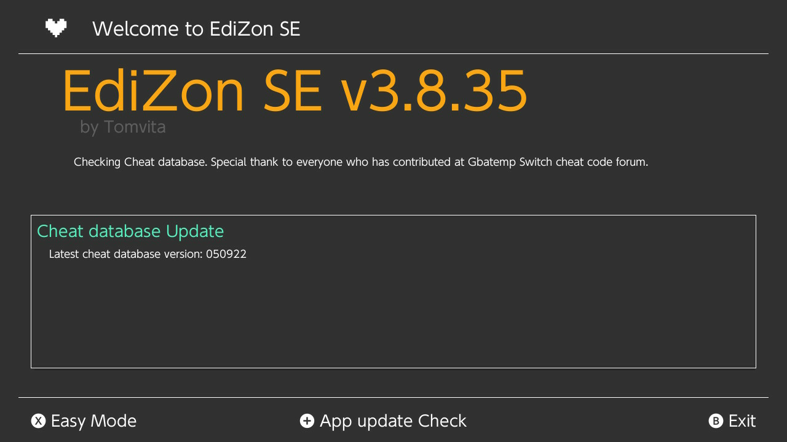
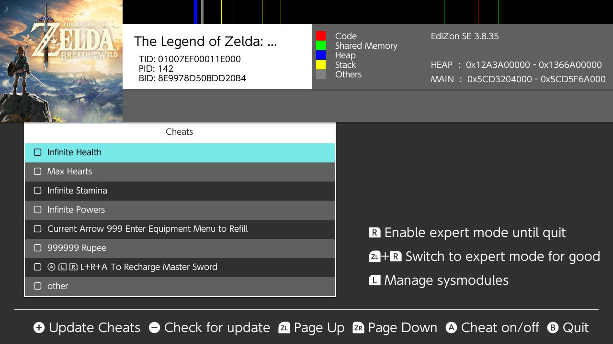
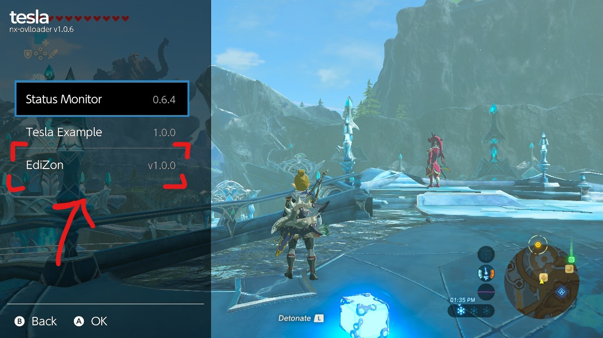
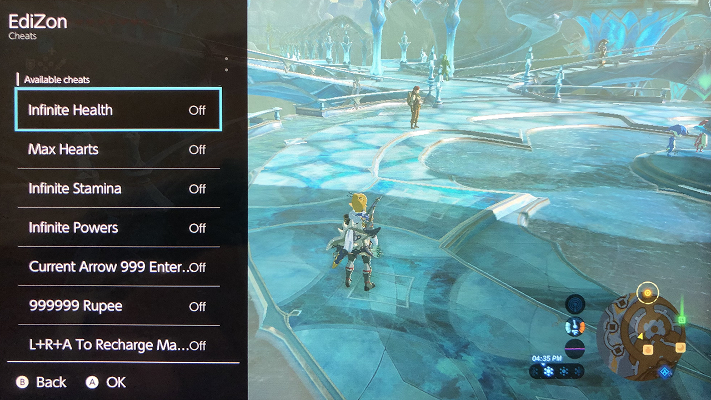

If you see no cheats upon opening EdiZon, and you're confident that it has cheats, EdiZon may need to refresh, or it needs an update to the cheat database
Refreshing
To refresh EdiZon, simply exit the album applet mode and launch it again after some number of seconds -- all while the game is running in the background. Usually this will refresh the list and actually display the cheats.
Another thing to try is "Update Cheats" by pressing the plus () button.
Updating Database
If the above step does not work, then EdiZon may need an update to its cheat database. You can do this by pressing the minus () button. You'll be brought to a screen that looks like this (yours may look different if there is an update available):

Follow the on-screen prompts to perform the update. After it's complete, you can back up from that menu and see if the cheats are present.
Absence of Cheats
If you find yourself trying to reload cheats to no avail, the game may not have any cheats available. It's possible a different homebrew has cheats, but this is unlikely.
Applying Cheats
Applying cheats are as simple as checking the boxes in the EdiZon applet while the game is running, or use the overlay.
Info
Make sure that the game is running, and EdiZon is loaded via applet mode.
Applet
Assuming you have cheats loaded, the main EdiZon splash screen should look something like this:

Simply just check the cheats that you want to enable and go back to the game.
Applying Too Many Cheats
Some games are pretty picky about modifications to the game, so you can expect to encounter some crashes or unexpected behaviour, especially when applying multiple at once.
Overlay
After you've loaded cheats at least once (i.e. you've encountered a screen similar to the one above), you can now load cheats through the overlay when in-game.
To open the overlay, press left bumper, d-pad down, and click the right stick in ( + + ). You should see something like this:

This is the Tesla overlay. You can have many applets in this menu, but the one we want to use is EdiZon. Once selected, you should see something like this (assuming your game has cheats):

Simply select the cheats you want to enable from this menu. You may close and return to this menu at any point without having to leave the game.
Note
The same warnings from the previous section apply here, especially the one about enabling too many cheats at once.